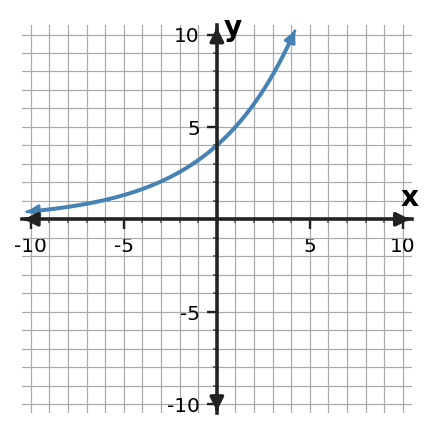

Algebra Practice 7.2
1. Write an exponential equation of the form $y=a(b)^x$ for the table.
| x | y |
|---|---|
| 0 | $\displaystyle 5$ |
| 1 | $\displaystyle 10$ |
| 2 | $\displaystyle 20$ |
| 3 | $\displaystyle 40$ |
2. A machine is worth \$1200 and keeps 85% of its value each year. Write an exponential equation for the amount after $t$ years.
3. For $f(x)=5(\frac{5}{4})^x$, identify the initial value and the growth or decay factor.
4. A quantity begins at 1200 and increases by 5% per period. Write a model for its value after $t$ periods.
5. A quantity begins at 500 and decreases by 10% per period. Write a model for its value after $t$ periods.
6. Use $f(x)=10(\frac{3}{2})^x$ to find $f(3)$.
7. An exponential function has $f(0)=3$ and $f(2)=12$. The factor is positive. Determine the per-unit factor and write the function.
8. The graph below is consistent with a model whose $y$-intercept is 4. Compare the candidates $y=4(1.25)^x$ and $y=1.25(4)^x$. Which equation fits the graph more directly? Support your choice with one intercept feature and one growth feature.

9. Write an exponential equation of the form $y=a(b)^x$ for the table.
| x | y |
|---|---|
| 0 | $\displaystyle 8$ |
| 1 | $\displaystyle 24$ |
| 2 | $\displaystyle 72$ |
| 3 | $\displaystyle 216$ |
10. Build an exponential model $f(x)=a(b)^x$ with $f(0)=4$ and $f(2)=36$. Use a positive factor.
11. Write an exponential equation of the form $y=a(b)^x$ for the table.
| x | y |
|---|---|
| 0 | $\displaystyle 11$ |
| 1 | $\displaystyle \frac{33}{2}$ |
| 2 | $\displaystyle \frac{99}{4}$ |
| 3 | $\displaystyle \frac{297}{8}$ |
12. A savings account begins with 100 dollars and increases by 8% each year. Write an exponential equation for the amount after $t$ years.
13. For $f(x)=7(\frac{3}{2})^x$, identify the initial value and the growth or decay factor.
14. A quantity begins at 450 and increases by 8% per period. Write a model for its value after $t$ periods.
15. A quantity begins at 600 and decreases by 25% per period. Write a model for its value after $t$ periods.
16. Use $f(x)=6(2)^x$ to find $f(3)$.
17. An exponential function has $f(0)=5$ and $f(2)=\frac{45}{4}$. The factor is positive. Determine the per-unit factor and write the function.
18. The graph below is consistent with a model whose $y$-intercept is 5. Compare the candidates $y=5(1.2)^x$ and $y=1.2(5)^x$. Which equation fits the graph more directly? Use the $y$-intercept first, then check the multiplicative growth.

19. Solve $(x+2)(x-4)=0$ and state the two zeros.
20. A quadratic model is $h(t)=(t+2)(t-3)$. Find the zeros. If $t$ represents time, identify which zero(s) could be meaningful when $t\ge 0$.
21. Use the zero-product property to solve $(3x+6)(x-3)=0$.
22. Factor $\displaystyle 14x^3+21x$ completely by removing the greatest common factor.
23. Factor $\displaystyle 9 x^{2} + 21 x$ completely using the greatest common factor.
24. A student claims $\displaystyle 15x^3-10x^2=5x^2(3x-2)$. Determine whether the claim is correct. Verify by multiplication and, if needed, give the correct factored form.